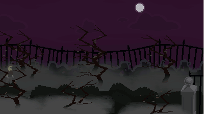
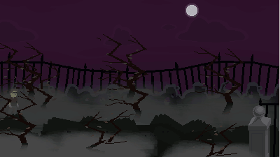

art
Tim has been drawing all his life. He has done comics and caricatures,
but mostly just doodles for fun. He prefers to draw people,
cartoon / comic characters, strange creatures and abstract things.
Tim uses Photoshop and Krita
for drawing, painting and image manipulation. He uses Inkscape for
vector art. For pixels, Tim uses Pyxel Edit, Photoshop, and sometimes
Game-Maker Studio's sprite editor.
From time to time, Tim takes photos and does photo manipulation.
more of his art on
tumblr
(WARNING: some NSFW content)
dude
games
Tim makes games (but often doesn't finished them) with GameMaker Studio.
check out more of his games on
itch.io
 

wow
code
Tim has recently started coding. He has learned a little bit of
GML, HTML, CSS, and Python. This web page is part of his
learning process with LaunchCode 🚀
arrrrrrrrrrrrghh!
music
Tim enjoys making music with FLStudio as a hobby. Listen to some of his tracks on soundcloud:
groovy
teach
Tim teaches cartooning/anime drawing for kids sometimes. He has taught classes and workshops at SCOSAG / Artscope, St. Louis County Library, St. Louis Public Library, Missouri History Museum, Eureka Arts Council, and KidzArt St. Louis.